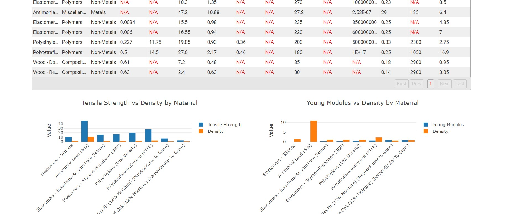
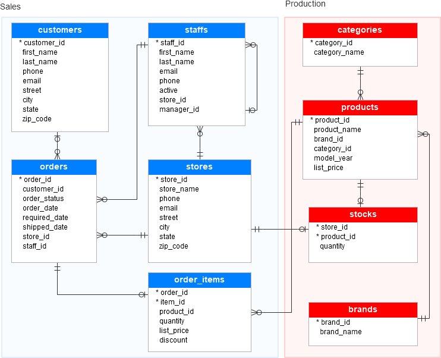

Blood Management API Project

Title: Blood Management System
Description: Developed an API-driven web application for managing blood donor information and performing CRUD operations. The app interacts directly with API endpoints on the frontend, enabling smooth data management.

Title: Material Selection System for Engineering Design
Description: Developed a web application that assists engineers in selecting the optimal materials for design projects based on multiple constraints (e.g., mechanical load, thermal properties, weight) and objectives (e.g., minimizing mass, maximizing stiffness). The system uses an advanced filtering process based on user inputs and displays a comparison chart of material properties for better decision-making. (This is currently on live)
Chicago Crime Data Analysis
Title: Chicago Crime Analysis Using Python and SQLite
Description: Conducted an extensive analysis of the Chicago crime dataset to uncover trends and insights. This project involved querying crime records to determine total crimes, assess community socio-economic factors, and identify crime patterns involving minors and schools. Utilized advanced SQL queries and sub-queries to analyze community hardship and poverty rates, ultimately providing data-driven recommendations for crime prevention strategies
SQL Data Analysis on Sales and Production

Title: SQL Data Analysis on Sales and Production
Description: In this project, I conducted comprehensive data analysis on both sales and production datasets using SQL. The analysis involved crafting and executing advanced SQL queries to uncover key insights, such as identifying top-performing stores, most popular products, revenue drivers by category, and average order metrics per customer. These insights provide a data-driven foundation for optimizing business operations and improving strategic decision-making